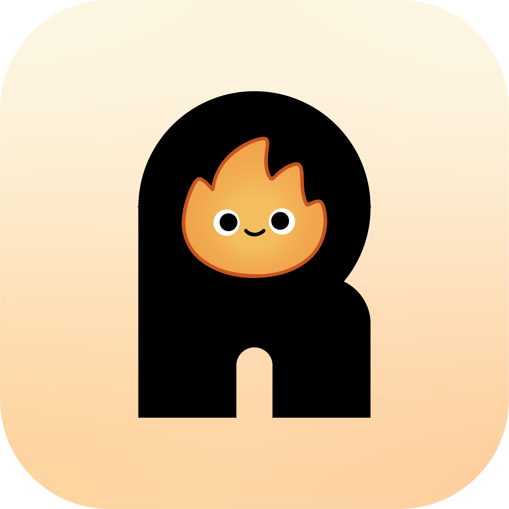
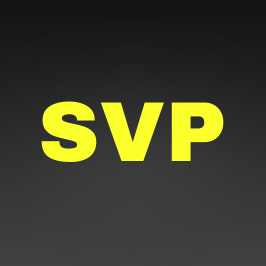
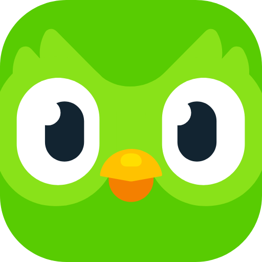
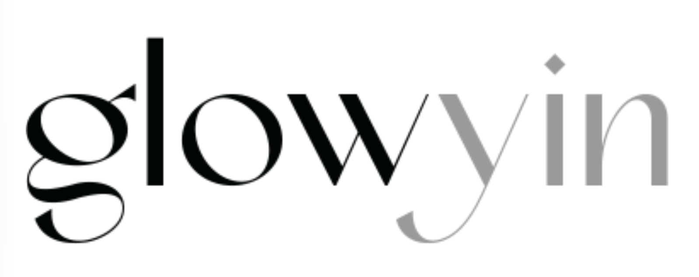
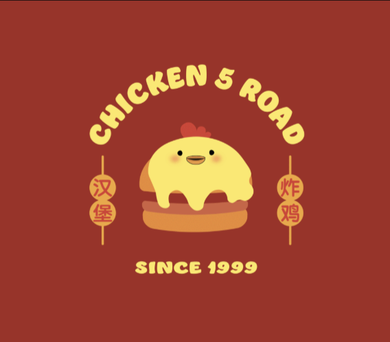

My Work
Rise Streak
Waking up early is easy for a week. Rise Streak is built for the second one, when the novelty is gone and it helps to have a group that notices you showed up.

Mobile Productivity 2026, UI/UXStep Inside Tomorrow
Step Inside Tomorrow turns a broadcast into a place. Walk into the scene, change one variable, and watch the story end differently.
SVP
Every glance at a phone mount is a second the road goes unwatched. SVP moves the directions onto the windshield, where the driver is already looking.

Smart Vision Path 2024, AR NavigationDuolingo
The hardest part of a new language is the first sentence you say out loud. This is a small game for two people, built to get that sentence over with.

Duolingo × Young Ones 2023, Integrated Campaign · UX/UIGlowyin
A dorm desk has no room for a mirror and no good light. Glowyin clips to the edge and fixes both.

Glowyin 2022, Industrial DesignChicken 5 Road
A 20-year-old fried chicken shop in Wuhan whose signage had gone quiet. The rebrand gives it back the personality regulars still talk about.

Chicken 5 Road 2021, Brand Identity